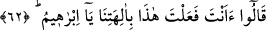
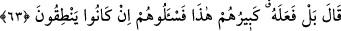

kötüdür. Nitekim et-Te’vîlâtü’n-Necmiyye’de böyle geçmektedir.
62. “Bunu ilâhlarımıza sen mi yaptın ey İbrahim?” dediler.
Burada hazif vardır. Yâni, onu getirdiler. Onu görünce yaptığı fiili reddederek ve
kendisini ayıplayarak: “Bunu” bu kırma işini “ilâhlarımıza sen mi yaptın ey
İbrahim?” dediler.”
63. “Belki de bu işi şu büyükleri yapmıştır. Hadi onlara sorun; eğer
konuşuyorlarsa!” dedi.
Hz. İbrahim, kırmayıp da boynuna baltayı astığı büyük puta işaret ederek: “Belki de
bu işi şu büyükleri yapmıştır.” dedi. Buradaki “hâzâ (şu)” zamîri, kendisine fiil isnâd
edilen büyük putun sıfatıdır. İbrâhim (a.s.), kırma işine kendisini zorladığı için kırma
fiilini ona isnâd etti. Çünkü, putların sıra sıra dizilmiş ve süslenmiş olduklarını,
müşriklerin onlara saygı gösterdiklerini, büyük puta daha çok saygı gösterdiklerini,
onun önünde daha çok eğildiklerini görünce bu onu kızdırdı. Bu yüzden putların
büyüğünün öfkesi daha büyük ve daha şiddetli oldu!
Bâzıları şöyle der: ““Belki de” kendisi daha büyük olduğu halde onunla birlikte bu
küçüklere de tapınılmasına öfkelendiğinden “bu işi şu büyükleri yapmıştır.”
İbrâhim (a.s.): “Onu ben yapmadım. Belki de ben varken niçin küçük putlara tapılıyor
diye bu işi büyükleri, onlara olan öfkesinden yapmıştır.” dedi.
“Onlara” durumlarını “sorun; eğer konuşuyorlarsa!” eğer konuşanlardansalar bunu
onlara kimin yaptığını haber versinler “dedi.”
Bir hadiste şöyle buyrulmuştur: “İbrahim peygamber, ancak üç yerde yalan
söylemiştir. İkisi Allâh’ın zâtı (rızâsını taleb) için olan “Ben gerçekten hastayım.”
(es-Sâffât, 37/89)” ve “Belki de bu işi şu büyükleri yapmıştır.” demesidir. Bir yalanı
da Sâre hakkında söylediğidir.”[185]
Burada ta‘rizli (tevriyeli/kapalı) sözler, şeklen yalana benzediği için “yalan” diye
isimlendirilmiştir. Yoksa açık yalan büyük günahlardandır. Peygamberler de, büyük
günahlardan mâsûmdurlar.
Eğer “Şâyet bu sözler ta‘rizli sözler ise, İbrâhim (a.s.) kıyâmet gününde insanlar
kendisine geldiğinde niçin onlara şefâatten geri durmasının sebebi göstermiştir?” diye
sorarsan, şöyle cevap veririm: “Peygamberlik ve hullet/dostluk mertebesine yaraşan,